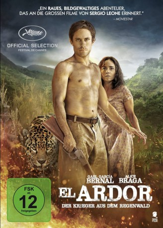

 
 IMDB-Wertung: 5.1 / 10
IMDB-Wertung: 5.1 / 10  Metascore:
Metascore: 
Kai, ein mysteriöser Mann taucht ohne Vorwarnung aus dem Regenwald auf, ohne Hemd und Schuhe, ohne Gepäck. Er kommt bei armen Farmern unter, da sie sein Auftauchen als positives Zeichen sehen. Doch die Farmer-Familie wird von S��ldnern angegriffen. Sie zwingen die Farmer, das Land zu verkaufen, töten den Bauern und entführen die Frau. Kai verfolgt die Söldner, um die Frau zu retten. Dabei ist die Natur sein engster Verbündeter.
Jahr: 2014
Dauer: 101 Minuten
FSK: 12
Land: Argentinien Studio: Sunfilm EntertainmentTonspuren:
Untertitel:
Auflösung: 1080p (1920x808) Größe: 3737 MB
Regisseur: Pablo Fendrik
Drehbuch: Pablo Fendrik
Soundtrack: Sebastián Escofet
Darsteller:
 Gael García Bernal als Kaí
Gael García Bernal als Kaí Alice Braga als Vania
Alice Braga als VaniaDatei: X:\2014(A-F)\Ardor (2014, FSK, 1920x808) 3D.mkv seit 06.08.2015
Festplatte: HD 2013(I-Z)-2014(A-Z)
 Es gibt insgesamt 119 Filme in der Gruppe '2014(A-F)'
Es gibt insgesamt 119 Filme in der Gruppe '2014(A-F)'